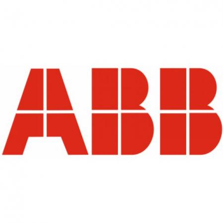
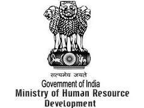

Honors and Awards
-
2017-2018Innovation & Enterpreneurship Practicum@SoC AwardBasu has been awarded I&E Practicum@SoC Award by School of Computing, NUS and NUS Enterprise. This award is granted to an innovative idea for a startup venture proposed by a student National University of Singapore. It consists of a seed grant to work on the idea further and to evaluate its business potential.
-
2014-2018NUS research scholarship
 The NUS Research Scholarship is awarded to outstanding graduate students for research at the National University of Singapore.
The NUS Research Scholarship is awarded to outstanding graduate students for research at the National University of Singapore. -
2010-2014ABB JDF ScholarshipBasu got the prestigious ABB-JDF scholarship. The ABB Jürgen Dormann Foundation (ABB-JDF) for Engineering Education provides scholarships to engineering students in different parts of the world who can prove a high standard of academic achievement and who need financial support to be able to continue their studies. In 2010, only 9 students from India got selected by ABB Jurgen Dorman foundation on the basis of their academic achievments.
-
2010KVPY Fellowship
 The Kishore Vaigyanik Protsahan Yojana (KVPY) is an on-going National Program of Fellowship in Basic Sciences, initiated and funded by the Department of Science and Technology, Government of India, to attract exceptionally highly motivated students for pursuing basic science courses and research career in science.
The Kishore Vaigyanik Protsahan Yojana (KVPY) is an on-going National Program of Fellowship in Basic Sciences, initiated and funded by the Department of Science and Technology, Government of India, to attract exceptionally highly motivated students for pursuing basic science courses and research career in science. -
2010-2014National Merit ScholarshipNational Merit Scholarship is awarded by Ministry of Human Resource and Development, India for academic excellence in Higher Secondary Examination.
-
2010-2014Indian Oil Academic ScholarshipIndian Oil Corporation Limited offered scholarship for academic excellence in Higher Secondary Examination.
-
2008-2014West Bengal Government Merit-cum-Means ScholarshipMerit-cum-means scholarship is awarded by Government of West Bengal for academic excellence in secondary examination(10) and it is continued to undergraduate studies on the basis of academic performances in Higher Secondary examination(10+2).
Grants and Funds
-
Jan 2019- Jan2020Graduate Research Innovation ProgrammeCo-applicant, National University of Singapore
-
Sept 2019- Dec 2019Deep Learning for Deep WaterCo-applicant, Chalmers University of Technology (AoA Transport, 2019)
-
Jan 2019- Dec 2021Adversarial Machine Learning in Big Data EraEmployee, WASP-NTU Grant
`
-
Aug 2018- Mar 2019Janus: Effective, Efficient and Fair Algorithms for Spatio-temporal CrowdsourcingEmployee, National University of Singapore